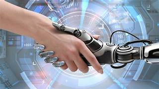

Robotics is an interdisciplinary field that merges engineering, computer science, and other domains to design, construct, program, and operate robots. These machines, whether autonomous or semi-autonomous, are capable of performing tasks traditionally carried out by humans or tasks that are beyond human capabilities. Robotics aims to create intelligent machines that can perceive, process information, and act upon their environment.
Sensors: Sensors serve as the sensory system of robots, allowing them to perceive and interact with their surroundings. These sensors include cameras, ultrasonic sensors, lidar, and infrared sensors, enabling robots to detect obstacles, measure distances, and recognize objects.
Actuators: Actuators provide robots with the ability to move and manipulate objects in their environment. Electric motors, pneumatic cylinders, hydraulic systems, and servo motors are common types of actuators used in robotics, enabling robots to perform tasks such as locomotion, gripping, and manipulation.
Control Systems: Control systems process sensor data, make decisions, and send commands to actuators to achieve desired actions. These systems can range from simple feedback loops to sophisticated algorithms based on artificial intelligence and machine learning, allowing robots to adapt to changing conditions and perform tasks autonomously.
End Effectors: End effectors, also known as robot hands or grippers, are the components of robots that interact directly with objects in the environment. These can range from claws to suction cups to robotic arms with multiple degrees of freedom, enabling robots to grasp, manipulate, and assemble objects with precision.
Manufacturing: Robotics has revolutionized manufacturing by automating repetitive and dangerous tasks in factories, leading to increased efficiency, productivity, and quality control. Industrial robots equipped with robotic arms and vision systems can perform assembly, welding, painting, and inspection tasks with precision and consistency.
Healthcare: Robotics plays a significant role in healthcare by assisting in surgery, rehabilitation, and patient care. Surgical robots enhance the precision and dexterity of surgeons during minimally invasive procedures, while exoskeletons and robotic prosthetics help restore mobility and independence to individuals with disabilities.
Exploration: Robotics enables exploration in challenging or hazardous environments where human presence is limited or impractical. Robotic rovers and drones are used in space exploration, deep-sea exploration, and disaster response, gathering data, conducting experiments, and performing tasks in remote or inaccessible locations.
Service and Assistance: Service robots provide assistance and support in various settings, including homes, offices, and public spaces. Social robots can engage in conversation, provide information, and perform tasks such as cleaning and caregiving, enhancing convenience and quality of life for users.
Despite the vast potential of robotics, several challenges and considerations need to be addressed:
Safety: Ensuring the safety of humans and the environment is paramount in robotics applications, particularly in collaborative and interactive settings. Safety measures such as risk assessments, protective barriers, and emergency stop mechanisms are essential to prevent accidents and injuries.
Ethical and Social Implications: Robotics raises ethical and social questions regarding job displacement, privacy, autonomy, and the ethical use of artificial intelligence. Addressing these concerns requires interdisciplinary collaboration and thoughtful consideration of the implications of robotic technologies on society.
Technical Limitations: Despite advances in robotics technology, robots still face technical limitations in perception, manipulation, mobility, and decision-making. Overcoming these limitations requires ongoing research and innovation in areas such as sensor technology, artificial intelligence, and materials science.
Human-Robot Interaction: Designing intuitive and natural interfaces for human-robot interaction is essential to enable effective collaboration and communication between humans and robots. Factors such as user experience, trust, and cultural considerations influence the design of human-robot interfaces and interactions.
Soft Robotics: Soft robotics involves the design and fabrication of robots using flexible and deformable materials, inspired by biological systems such as soft-bodied organisms. Soft robots offer advantages in versatility, adaptability, and safety, enabling them to interact with delicate objects and navigate complex environments.
Collaborative Robotics: Collaborative robots, or cobots, are designed to work alongside humans in shared workspaces, assisting with tasks that require human dexterity, judgment, or creativity. Cobots are equipped with advanced sensors and safety features to ensure safe and efficient collaboration with human workers.
Autonomous Systems: Advances in artificial intelligence and machine learning are driving the development of autonomous systems capable of operating independently in unstructured and dynamic environments. Autonomous robots and vehicles are used in applications such as transportation, agriculture, and surveillance, where human intervention is limited or impractical.
Robotics as a Service: Robotics as a service (RaaS) models are emerging, allowing organizations to access robotic capabilities on-demand without significant upfront investment. RaaS offerings include robot rentals, leasing, and subscription-based services, democratizing access to robotics technology and enabling flexible deployment in various industries.
Click here to know more about the RoboticsRobotics continues to push the boundaries of what is possible, revolutionizing industries, enhancing human capabilities, and shaping the future of technology. As we navigate the challenges and opportunities presented by robotics, it is essential to prioritize safety, ethics, and human-centric design to ensure that robotic technologies serve the needs of society and contribute to a better future.
To have a clear idea about Robotics pls do watch this video
Watch Video